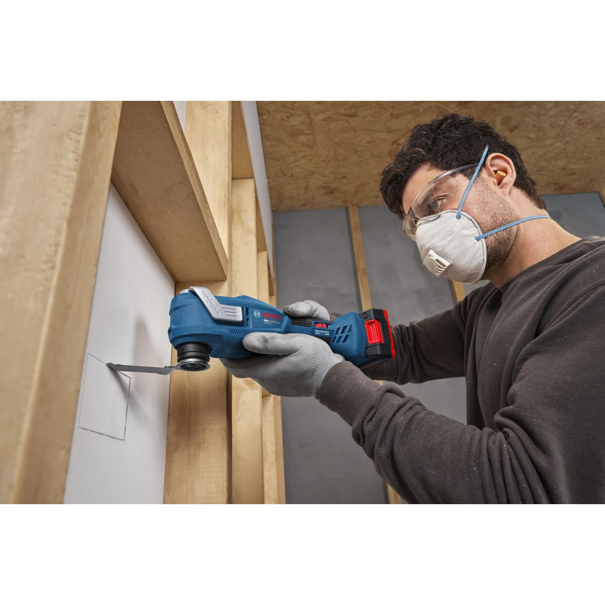
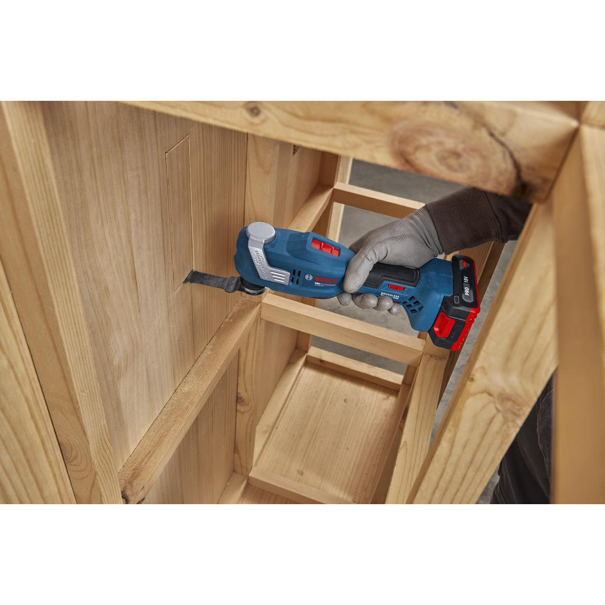
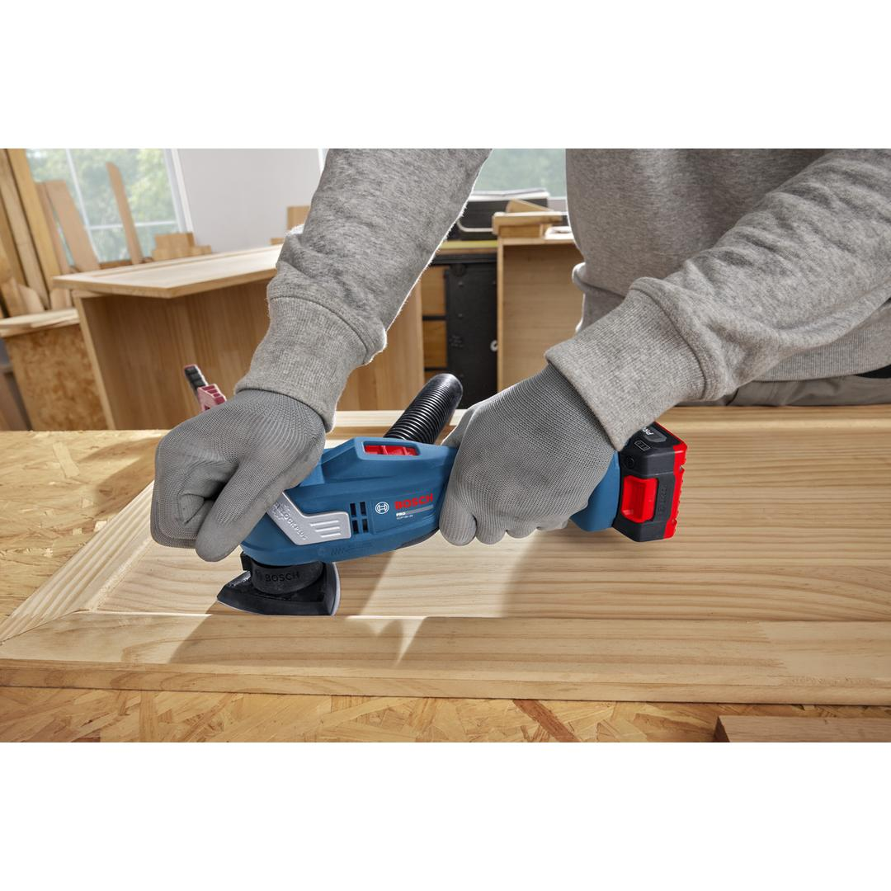
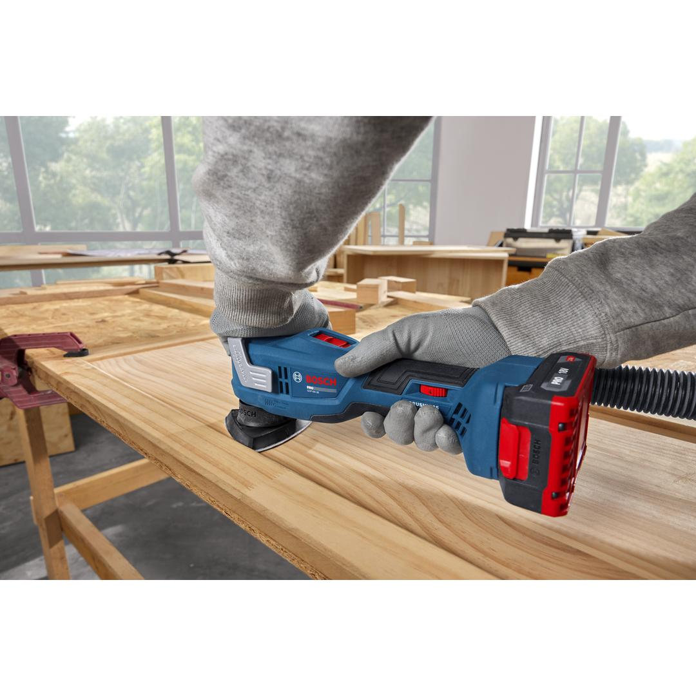
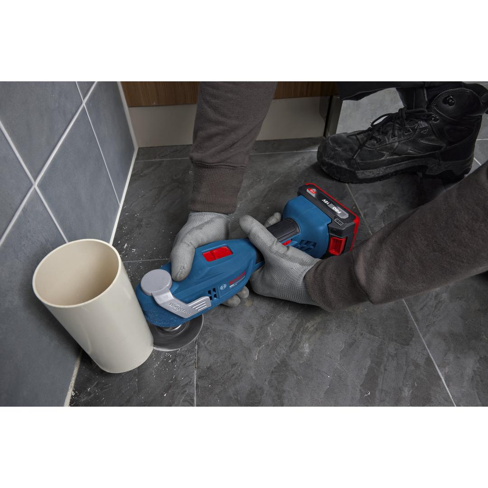
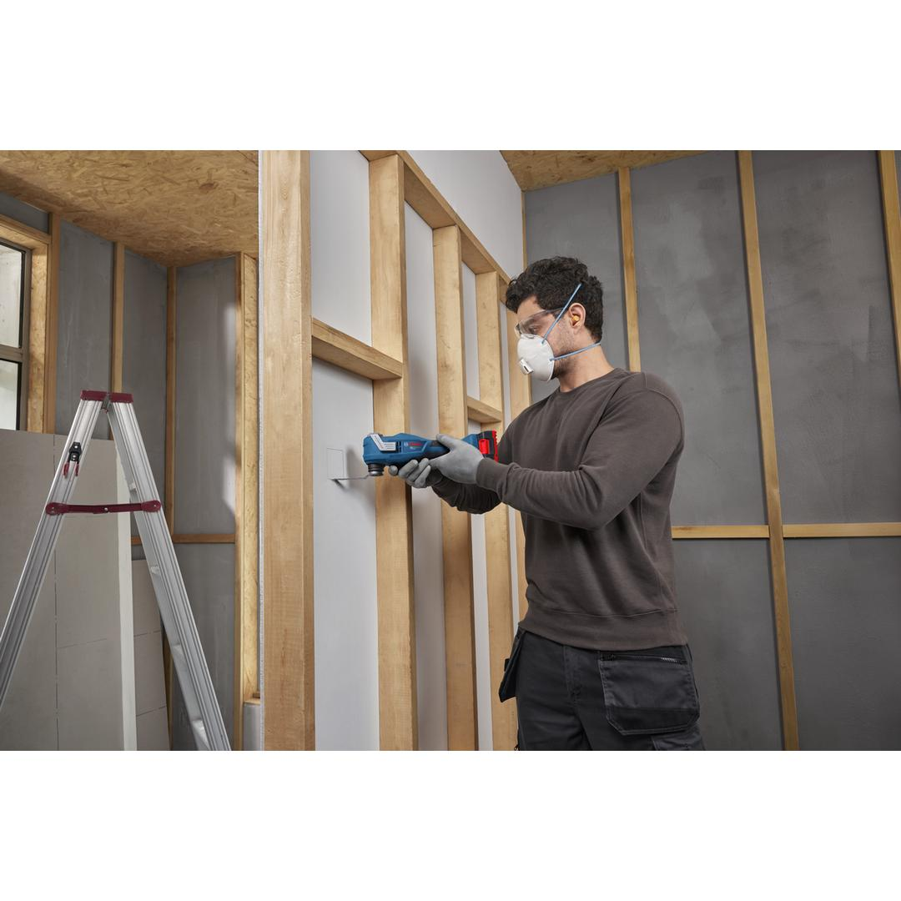
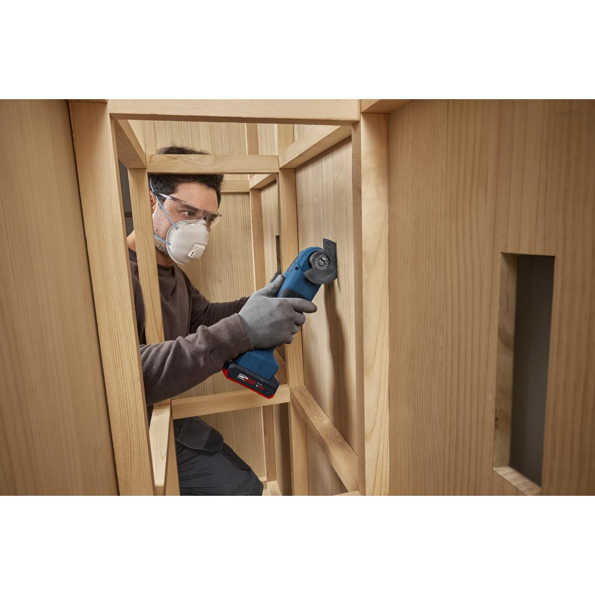
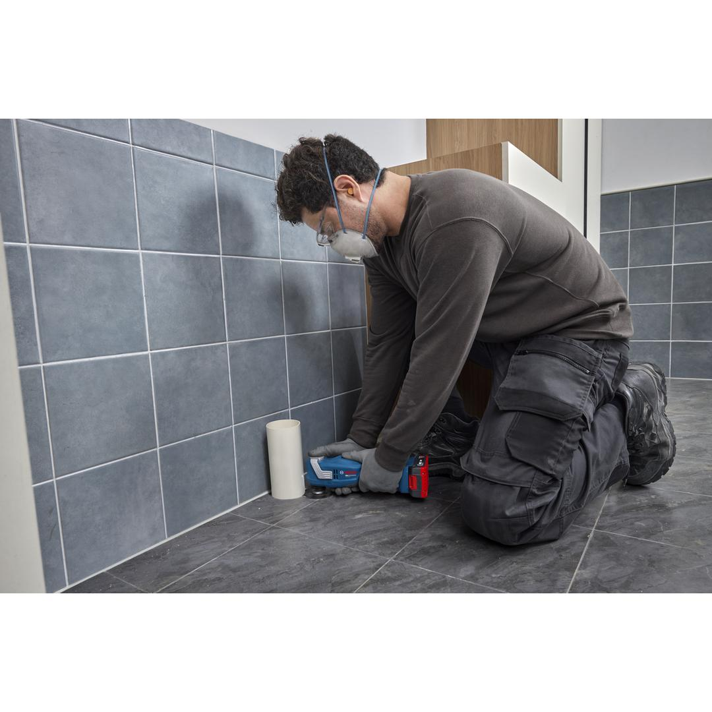
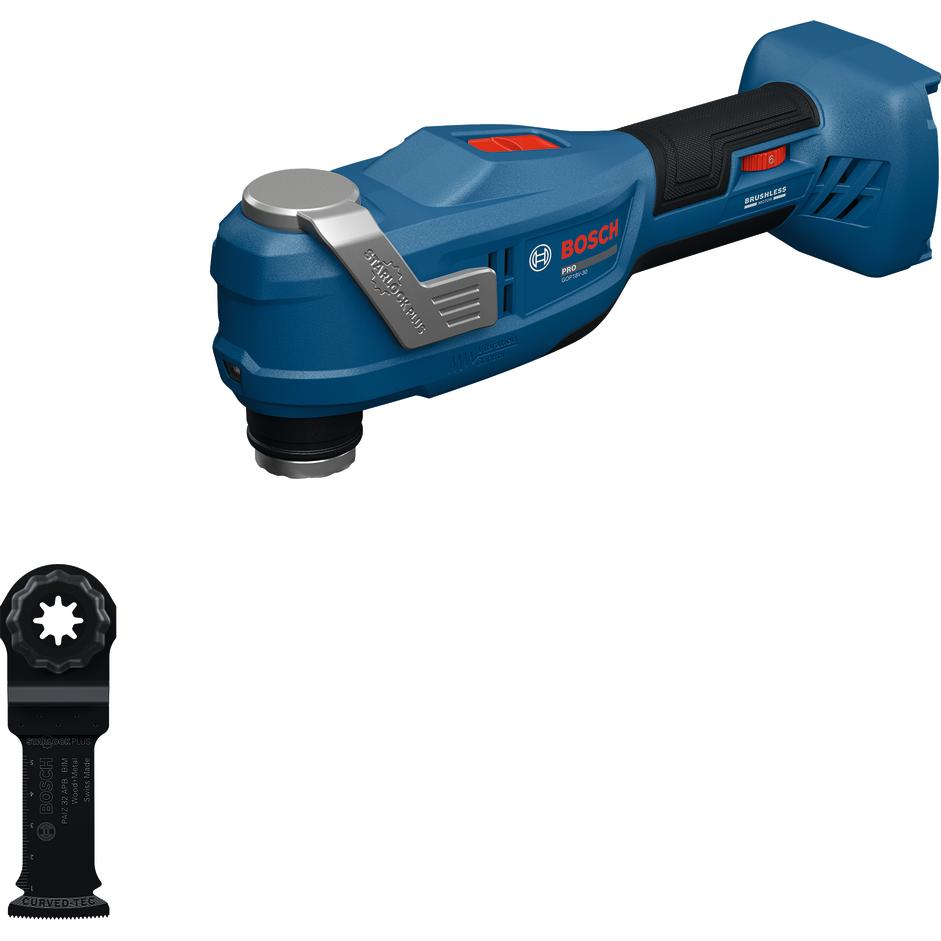

06018G3080









| Noise level |
The A-rated noise level of the power tool is typically as follows: Sound pressure level 82 dB(A); Sound power level 90 dB(A). Uncertainty K= 3 dB. |
| Tool dimensions (width) |
90 mm |
| Tool dimensions (length) |
280 mm |
| Tool dimensions (height) |
99 mm |
| Battery voltage |
18.0 V |
| No-load rotation |
10,000 – 18,000 opm |
| Oscillation angle on left and right |
1.5 ° |
| Weight excl. battery |
1 kg |
| STARLOCK Sys. Compatibility |
Starlock StarlockPlus Snap-in |
| BITURBO |
No |
Easy access to a comfortable oscillating multi-tool with efficient vibration control
Professionals know that working with traditional middle-priced oscillating tools can be tough: frequent vibrations lead to hand fatigue, and blade changes can also be a hassle. The PRO GOP18V-30 oscillating multi-tool brings effective vibration control to a more affordable price range. Its dual-housing design, normally applied only to premium models, significantly reduces vibrations to 3 m/s², ensuring smoother operation and less strain. With a Snap-in blade holder and Starlock & StarlockPlus blades, you can change accessories quickly, safely, and effortlessly—just one click, no need to touch hot blades. Featuring a 3.0-degree oscillating angle powered by a brushless motor, the PRO GOP18V-30 delivers satisfying cutting efficiency to all its applications. It also has a net weight under 1 kg, making it easy to operate.
The PRO GOP18V-30 oscillating multi-tool is easy to use for vertical and horizontal cutting on wood boards, socket cutting on drywall, pipe cutting close to surfaces, sanding, and paint, rust, or glue removal. Compatible with the Bosch Professional 18V System and with the multi-brand battery alliance AMPShare.